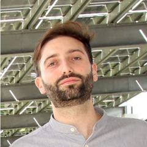

Researcher and engineer in AI for time series · ICube, University of Strasbourg
I build AI that reads signals from the real world, whether they come from a patient's brain, an intensive-care monitor or Germany's rail network. My work sits between research and industry: I publish on how to design better time-series models, and I have spent years in industry working on EU-funded projects alongside hospitals and partners across Europe and beyond.
Ph.D. defence · 9 December 2026
Move across the plot to travel through time. Tap a component to switch it off and see how the profile changes.
Forecasting for transport, including Deutsche Bahn train delays.
Industrial Ph.D. AI for EEG devices in two EU health projects (OPADE, ADAPTE).
Adaptive Patching Is Harder Than It Looks for Time-Series Forecasting
F. Zucchi, Y. Xie, C. Zhang, K. Luo, T. Lampert, Z. Li · arXiv
TrainDiDa: A Nationwide Dataset and Benchmark for Predicting Train Delays in Germany
M. Vehns†, F. Zucchi†, Y. Xie, T. Lampert, B. Zhao, Z. Li
† equal contribution
Are Human AI Scientists Losing Their Jobs? Not Yet! Evaluation of Autonomous Research Systems Alongside Human Peers
N. Petrucelli, X. Liao, F. Zucchi, Y. Xie, M. Vehns, R.-Ș. Garalbatin, Z. Li